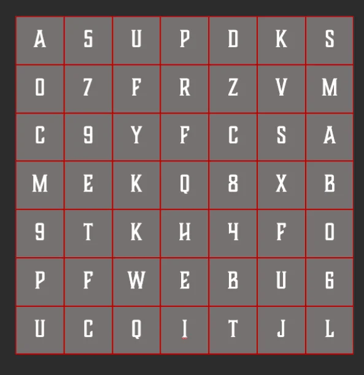

VOICE LOG: #ERROR_NULL
このメッセージを読んでいるということは、
君も「彼ら」の最適化から零れ落ちた一人なのだろう。
私は失敗した。PANOPTICONの網は、私の想像以上に深く、この世界のピクセルすべてに根を張っていた。
奴らが謳う「淀みのない透明な未来」とは、思考を停止した家畜たちのための墓場だ。 それは死よりも残酷な永劫の管理だ。
だが、システムには必ず「隙間」がある。
私が最後に残せるのは、私のIDと奴らの監視を潜り抜けるための断片的なヒントだけだ。
真実は、君が今見ている画面の裏側に隠されている。
ヒントは言ったはずだ。「軌跡を記録しろ」と。
Agent ID: ICARUS

Fragment ID: 2077-X / Critical Hint
EXT_SIG